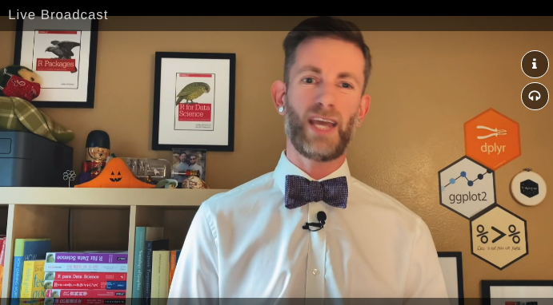
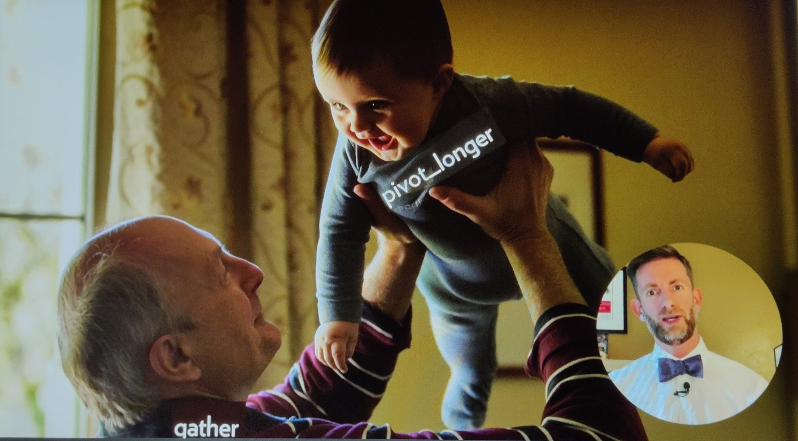
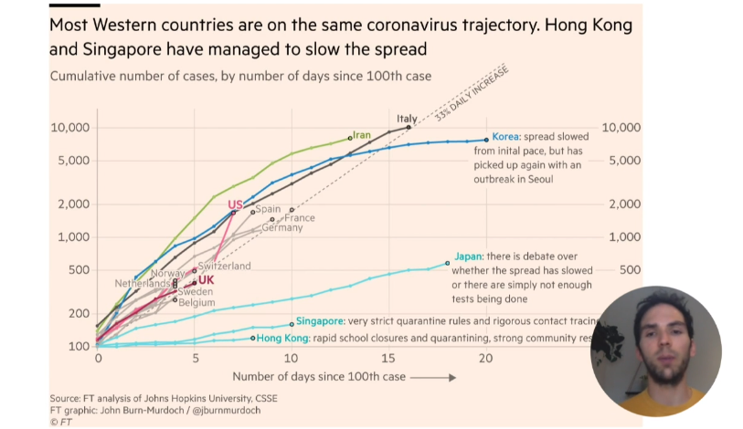
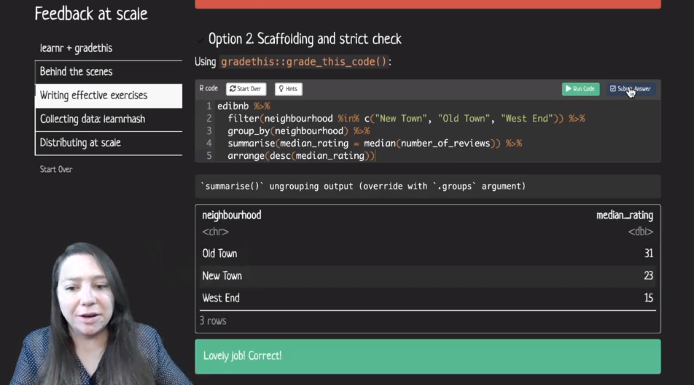

}}index_files/anchor-sections/anchor-sections.css" rel="stylesheet" />
Due to the COVID-19 pandemic, this year’s rstudio::conf was virtual (and free!). The conference is about all things R and RStudio. There were 15K+ registrants. Talks ran concurrently over a 12 hour period (and repeated again for viewers in other time zones). My notes below are only for a handful of selected talks– there are many others that I was not able to watch (yet). Videos are available on the RStuduio website.
Keynote: Maintaining the house that tidyverse built
Speaker: Hadley Wickham (Chief Scientist at RStudio)

- Discussed the life cycle of functions and packages, which you will see tagged on many of RStudio’s packages. See this page and the
lifecycle package for more details.
- To maintain a static package installation for a project: Use
renv or RStudio’s public package manager. On the latter, just pick a day in the past to maintain package state from that date (only for packages on CRAN).
- If you haven’t already heard,
dplyr’s spread & gather functions are not going away. However, the recommended replacement functions are pivot_longer and wider_wider.

magrittr will be around for at least 4 or 5 years, but people will be encouraged to use the new pipe in base R version 4.1.modelr is superseded by tidymodels.
R & Python: Going Steady
Speaker: Sean Lopp (Project Manager at RStudio)
- Myth: Data science teams need to choose between R and Python (or some other language).
- Truth: Using the right tool for the right job can make data science teams more effective.
- RStudio Server Pro: Provides a common architecture for many different types of data science tools (e.g. Jupyter notebooks, JupyterLab, RStudio). IT teams only need to set up one infrastructure instead of supporting many tools.
- RStudio Connect: Provides a common hosting architecture for many different types of data science products (e.g. reports, notebooks, APIs, shiny applications). Additionally, RStudio Connect increases collaboration between team members using different programming languages and tools.
- My thoughts: I would ❤️ to have access to RStudio Connect.
Art Lessons: One Year as RStudio’s Artist-in-Residence
Speaker: Allison Horst (Professor at the Bren School of Environmental Science and Management at UC Santa Barbara)
Allison talked about the importance of art for making R instruction material more approachable for learners. Some of her new artwork was featured in this talk– I’m feeling motivated to add some of new artwork to some of my training materials. Allison’s artwork can be found in her GitHub repo.

Keynote: Reporting on and visualising the pandemic
Speaker: John Burn-Murdoch (Financial Timesâ senior data visualization journalist, and creator of the FTâ’s coronavirus trajectory tracker charts)
John’s talk focused on data visualization for a mass audience. The data viz research paper that has been the most influential on his work: Beyond Memorability: Visualization Recognition and Recall.

Lessons:
- Text and other annotations are critical when sharing charts to the masses. The annotations make the chart accessible.
- It’s the responsibility of the chart designer to make sure the reader is not confused when looking at the chart.
- Info viz is personal and often political. People will bring their prior beliefs to the plot and make judgments about the utility of the chart (for example many strong opinions about the use of log scale on the vertical axis).
- Don’t publish and vanish. Incorporate readers’ feedback.
- Ease of understanding is top priority (more than accuracy). For example, using a 7 day rolling average may be easier for people to understand than splines (even though the latter shows more accurate numbers).
- Animation can be incredibly effective (but use it sparingly).
What’s new in tidymodels?
Speaker: Max Kuhn (Software engineer at RStudio)
Recent updates in tidymodels:
- Added limited support for sparse matrices.
finetune package (extension of tune package) for finding optimal tuning hyper-parameters. Nice methods available in finetune finding optimal hyper-parameters (methods are more efficient that full grid search):
- Racing methods
- Simulated Annealing search
How do you pick a modeling framework (e.g. mlr3, h2o, tidymodels)?
h2o for speed (sub-second latency).- If your framework is tidyverse, you might go with
tidymodels.
mlr3 is great, too 😃
See the book: Tidy modeling with R. Slides for talk available here.
Feedback at scale
Speaker: Mine Çetinkaya-Rundel (Educator and Data Scientist at RStudio, Senior Lecturer in the School of Mathematics at University of Edinburgh)
Building tutorials using learnr:
- Really shines with coding exercises. Provides instant feedback to students.
- Recommendations: Include starter code for students to complete. Give “human friendly” feedback in response to incorrect responses. Check the result instead of checking the code (since students can order operations in multiple ways).
learnrhash: Use with learnr to collect (hashed) answer submissions from student learnr sessions.
Options for distributing at scale:
- shinyapps.io or RStudio connect, or
- distribute within a package

Always look on the bright side of plots
Speaker: Kara Woo (Research scientist in data curation at Sage Bionetworks)
Discussion points: Mapping mishaps, scale snafus (setting scale limits removes data before statistical summaries. To zoom in on a plot, better to set coordinate limits), and theme threats. Kara talked about common mistakes that people make when using ggplot2.
Follow accidental aRt on Twitter.